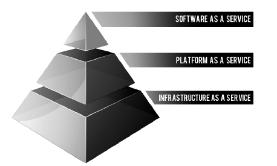
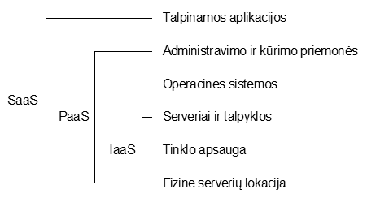

Kas yra debesų kompiuterija?
„Debesų kompiuterijos“ koncepcija jau senokai šmėžuoja informacinių technologijų (IT) padangėje. Vis daugiau naujų paslaugų sukuriama, pasitelkiant „debesų technologiją“, pavyzdžiui, „Google Drive“, „Apple iCloud“, „Microsoft Office 365“ ir „Skydrive“ ir panašiai.
Žinoma, rastume begalę ir kitų paslaugų, skirtų kliento specifiniams poreikiams tenkinti: tokių kaip Vook.com (el. knygų leidykla), Runkeeper (sporto rezultatų organizavimui), 42tasks.com (online darbų tvarkyklė) ir kitų.
Didžiosios IT kompanijos šiuo metu yra itin nusitaikiusios į šią verslo sritį, noriai teikia įvairių „debesų kompiuterijos“ sprendimų paslaugas: nuo IT infrastruktūrinės dalies iki galutinių programų (buhalterinės, dokumentų valdymo sistemos, CRM ir kt., dažniausiai verslo įmonėms). Ir ne tik didžiųjų, bet ir Lietuvos IT kompanijų marketingo skyriai intensyviai dirba, reklamuodami „debesų kompiuterijos“ gėrybes. Informacijos yra tikrai daug. Nepaisant to, tema yra pakankamai plati ir sudėtinga. Šios straipsnių serijos autorius nėra abejingas šiai sričiai, todėl ne tik supažindins skaitytojus su esminiais „debesų kompiuterijos“ aspektais, tačiau ir giliau panagrinės jos sandarą.
Taigi kas iš tikrųjų yra ta „debesų kompiuterija“? Kaip ir su kuo ji valgoma? Net ir pati debesų kompiuterijos sąvoka (ang. cloud computing) buvo apibrėžta 2011 Rugsėjį, kai JAV standartų agentūra NIST (The National Institute of Standards and Technology) paskelbė 16-tą ir galutinį šios sąvokos apibūdinimą.
NIST oficialiai skelbia, kad „debesų kompiuterija yra modelis, kuris leidžia visur, patogiai, pagal poreikį (on-demand) per tinklo prieigą naudotis bendrais kompiuteriniais ištekliais (pavyzdžiui, kompiuteriniai tinklai, serveriai, duomenų laikmenos, taikomosios programos ir programinės įrangos tarnybos), tuos išteklius valdant su minimaliu paslaugų tiekėjo įsikišimu.“
NIST apibrėžimas apibūdina 5 esmines „debesų kompiuterijos“ charakteristikas:
- pagal poreikį savarankiškai vykdomos paslaugos (on-demand self-service)
- plati tinklo prieiga (broad network access)
- išteklių telkimas (resourse pooling)
- didelis lankstumas ir plėtra (rapid elasticity and expansion)
- paprastai matuojamos paslaugos (measured service)
NIST išskiria tris „debesų kompiuterijos“ paslaugų formas – infrastruktūra, platforma, programinė įranga. Kitaip šios trys kategorijos apibūdinamos kaip IaaS (infrastructure as a service), PaaS (platform as a service), SaaS (software as a service). Taip pat įvardijami keturi „debesų kompiuterijos“ išdėstymo modeliai – privatus, bendrijos, viešas ir hibridinis (dažniausiai naudojama privatus, viešas ir hibridinis „debesis“).
Apie tai plačiau kalbėsime skyrelyje Debesies struktūra.
Apibendrinant, galima teigti, jog „debesų kompiuterija“ – tai „protingesnė“ naujos kartos priegloba (hosting). Duomenų centrai užpildomi dedikuota serverine įranga, kur užtikrinamas elektros energijos tiekimas, pastovus interneto ryšys, serverinės įrangos kondicionavimas, programinės įrangos stabilus veikimas. Vartotojai nuomoja tų išteklių dalį pagal poreikį, atsiskaitydami panašiai, kaip už elektros energiją mėnesio pabaigoje, pagal skaitliuko parodymus.
Vienas iš geriausių ir seniausių „debesų kompiuterijos“ pavyzdys – „GMail“. Jūsų pašto dėžutė galbūt yra kažkur „Google“ Malaizijos duomenų centro serveriuose, tačiau jums visiškai nereikia rūpintis nei serveriais, nei programine įranga. El. paštas veikia be mūsų įsikišimo, turime užtektinai disko talpos savo pašto dėžutėje. Aišku, ši „debesų“ technologija pastaruoju metu aktyviai transformuojasi ir siūlo įvairių inovatyvių sprendimų. [1]
Debesies „stekas“
Bendra debesies struktūra dažnai apibibrėžiama kaip „stekas“ (stack) susidedantis iš trijų sluoknių: SaaS, PaaS, ir IaaS.

Debesies sluoksniai [2]
Šie sluoksniai skiriasi savo paskirtimi ir teikiamomis paslaugomis, tačiau didžiąja dalimi atvejų figūruoja visis trys kartu.
Pavyzdžiui, jei jums reikalinga tik tai, ką suteikia PaaS lygis, automatiškai gaunate ir po juo esantį IaaS, o taip pat didelė tikimybė kad SaaS norite susikurti pats.

Debesies sluoksnių teikiamos paslaugos
SaaS
SaaS lygio galutinis produktas - vartotojams prieinamos aplikacijos. Tai gali būti veiši servisai, pavyzdžiui GMail, arba uždaram žmonių ratui taikomos sistemos. Pastarųjų geras pavyzdys būtų Atlassian JIRA sistema įmonės darbuotojų užduočių organizavimui ir planavimui.
Dažniausiai SaaS aplikacijos pasiekiamos tiesiog per interneto naršyklę, vartotojų duomenis atskiriant pagal prisijungimą į sistemą.
SaaS teikiami privalumai:
- Lengvas priėjimas prie net ir sudėtingų aplikacijų. Nereikia jokios instaliacijos į kompiuterį, priežiūros, atnaujinimų.
- Dauguma paslaugų turi lanksčias kainas. Nereikia mokėti už visą paketą jei reikalinga tik dalis funkcijų.
- Nereikia jokios papildomos programinės įrangos. Viskas pasiekiama tiesiog interneto naršyklės pagalba.
- Mobilizuojama darbo jėga. Nereikia rūpintis dėl skirtingos kompiuterinės įrangos palaikymo, tuo pasirūpina tiekėjas. Taip pat tiekėjas turi pasirūpinti ir saugumu.
- Duomenys pasiekiami iš bet kur. Reikalinga tik interneto prieiga - ir viskas jūsų rankose. Nereikia rūpintis duomenų sinchronizavimu tarp skirtingų kompiuterių ir t.t.
[2]
PaaS
PaaS paprastai naudojamas programinės įrangos ar tinklalapių kūrėjų. Tiekėjai pasirūpina platformomis puslapiams talpinti ar programiniam kodui saugoti bei kompiliuoti, bei užtikrina stabilią priežiūrą.
Taip pat dauguma tiekėjų duoda priemones gaunamų paslaugų stebėjimui, analizavimui ir optimizavimui.
IaaS
IaaS iš esmės yra kompiuterinės įrangos nuoma. Nuo PaaS šios paslaugos skiriasi tuo kad dažniausiai gaunate tiesiog „geležį“, ir visa programine įranga reikia pasirūpinti pačiam. Tačiau tai suteikia daug laisvės viską susitvarkyti konkrečiai savo poreikiams.
Tiekėjai pasirūpina įrangos priežiūra - jūsų išsinuomotas kompiuteris visada bus įjungas ir tvarkingai veikiantis. Jei atsitinka nesklandumai ar gedimai - operatyviai įranga pakeičiama į kitą ir visa informacija atsatoma ar perkeliama.
IaaS privalumai:
- Sumažinamos išlaidos. Serveriai ar galingi kompiuteriai yra labai brangųs, jau nekalbant apie jų priežiūrą.
- Apsidraudimas nuo nesėkmių. Visi IaaS tiekėjai pasirūpina atsaginėmis duomenų kopijomis ir esant reikalui operatyviai jas atsato.
- Lengvas plėtimasis. Jei prisiriekia dar vieno kompiuterio - IaaS tiekėjai jums jį paruoš valandų ar net minučių bėgyje.
- Geresnė apsauga. Tiekėjai turi specialistus, saugančius jūsų nuomojamą įrangą nuo įsilaužimų ir kitų grėsmių.
[3]
Dažnai IaaS klientais tampa grafikos apdorojimo fermos (render farms), kur reikalingas didelis kiekis labai galingų kompiuterių. Panašiais atvejais labai patogu kad bet kada galima keisti kiek ir kokios technikos nuomojama, jei sumažėja paklausa jums nereikia laikyti kalno nenaudojamos įrangos.
Debesų kompiuterija iki savo dabartinės formos išsivystė per keletą etapų, tokių kaip tinklelio kompiuterija (grid computing), aplikacijų paslagų tiekimas (application servise provision, ASP), ar dabartinio SaaS ankstyvesnės versijos.
Bet pačia pradžia laikomas šeštasis praeito amžiaus dešimtmetis. Pirminės idėjos autoriumi laikomas J.C.R. Licklider'is, prisidėjusio prie tuometinio ARPANET (dabartinio interneto pirmtako) sukūrimo.
Jo vizijoje visi žmonės pasaulyje buvo apjungti bendro tinklo naudojimo, pasiekinatys duomenis ir programas iš bet kurios geografinės vietos. Margaret Lewis, AMD produktų marketingo direktorė, pripažysta kad tai „skamba labai panašiai į tai ką dabar vadiname debesų kompiuterija“.
Kiti debesies koncepciją priskiria kompiuterių mokslininkui John McCarthy kuris siūlė įdėją kompiuterijos tiekimui kaip komunalinei paslaugai, prižiūrimai tiekimo įmonių.
Viena paskutinių evoliucijos stadijų šioje srityje yra Web 2.0, tačiau tik devintajame dešimtmetyje pradėjes sparčiai augti interneto greitis daugelyje valstybių trukdė įsitvirtinti debesijos paslaugoms.
Termino kilmė
Konkrečios termino „debesų kompiuterija“ atsiradimo aplinkybės yra miglotos. Moksle žodis debesis dažnai naudojamas apibūdinant dideles panašių objektų sankaupas.
Kita galima teorija - senosios programos interneto tinklų schemų paišymui serverius žymėdavo kaip apskritimus, ir keletas serverių vienoje vietoje galėjo atrodyti panašu į debesies atvaizdą. Analogiškai debesis (tiek kaip terminas, tiek kaip piktogramos) imtos naudoti diagramose internetui vaizduoti. Tai laido supaprastinti diagramas, tariant kad nėra būtina detalizuoti tinklo vidinės struktūros, tik indikuoti kad jis yra.
Debesies simbolis buvo naudojamas tinklui žymėti dar 1977 metais ARPANET'e, ir nuo 1981 metų CSNET'e.
Pirmieji čio termino panaudojimai kalbant apie dabartinę debesų kompiuterijos sąvoką randami nuo 1996, o pats anksčiausias atvejis buvo Compaq įmonės vidiniuose dokumentuose.
Terminas buvo išpopuliarintas 2006 kai Amazon pristatė savo Elastic Compute Cloud paslaugas. [4]
Raidos etapai
Anksčiausias postūmis link debesų kompiuterijos buvo 1999 metais atsiradęs Salesforce.com, kuris tapo pionieriumi verslo pasalugų tiekime per interneto puslapį.
Tai praminė takelį tiek specializuotoms tiek plataus pobūdžio įmonėms tiekti paslaugas internetu.
Kitas šuolis buvo Amazon Web Services, pasirodę 2002-ais. Tai atnešė daug debesies principu teikiamų paslaugų, kaip talpyklos, kompiuterinių išteklių nuoma, netgi žmonių įgūdžių dalinimasis Amazon Mechnical Turk pagalba.
Po to, 2006 metais pasirodė jau minėtas Amazon Elastic Compute Cloud (EC2). Kompanijos Brightcove, tiekinačios SaaS internetines video platformas Jungtinės Karalystės televizijos kanalams, direktorius Jeremy Allaire sakė „Amazon EC2/S3 buvo pirmoji plačiai prieinama debesų kompiuterijos infrastruktūra“
Galiausiai 2009 pasirodė Web 2.0, ir tokios įmonės kaip Google ėmė siūlyti programinę įrangą pasiekiamą tiesiai naršyklėje, per tokius servisus kaip Google Apps.
Pasak Jungtinės Karalystės debesų kompiuterijos pradininko Jamie Turner, kiti faktoriai įgalinę debesų kompiuterijos raidą yra virtualizacijos technologijų branda, pasauliniu mastu plintantis didelio pralaidumo internetas, ir atsiradę universalūs standartai programinei įrangai. [5]
Ateities prognozės
Dauguma IT srities profesionalų pripažysta debesijos teikiamus privalumus, kaip didelė talpa, lankstumas ir kaštų sumažinimas. Bet daug kas dar turi abejonių dėl kitų aspektų, pavyzdžiui saugumo. Dar pernai metais buvo kile skandalų dėl Apple iCloud, kas parodo kad sistemoje vis dar apstu spragų.
Tačiau akivaizdu kad programinė įranga palengva juda prie debesies modelio, populiarėjant aplikacijų parduotuvėms ir operacinėms sistemoms tolydžio integruojant duomenų saugojimą debesyje kaip standartinę funkciją.
Kai bus išsprestos saugumo problemos ir globaliniu masteliu interneto pralaidumas pasieks tenkinantį lygį, debesų kompiuterija gali tapti pasauliniu standartu.
Bet šiuo metu kai kurioms įmonėms atrodo netgi daugiau vargo rūpintis tiek lokaliai turimais resursais, tiek prižiūrėti savo duomenis debesyje.